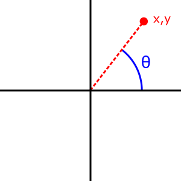

Our volunteers haven't translated this article into Українська yet. Join us and help get the job done!
You can also read the article in English (US).
The Math.atan2() function returns the arctangent of the quotient of its arguments.
Syntax
Math.atan2(y, x)Parameters
y- First number.
x- Second number.
Return value
The arctangent of the quotient of the given arguments.
Description
The Math.atan2() method returns a numeric value between -π and π representing the angle theta of an (x, y) point. This is the counterclockwise angle, measured in radians, between the positive X axis, and the point (x, y). Note that the arguments to this function pass the y-coordinate first and the x-coordinate second.

Math.atan2() is passed separate x and y arguments, and Math.atan() is passed the ratio of those two arguments.
Because atan2() is a static method of Math, you always use it as Math.atan2(), rather than as a method of a Math object you created (Math is not a constructor).
Examples
Using Math.atan2()
Math.atan2(90, 15); // 1.4056476493802699 Math.atan2(15, 90); // 0.16514867741462683 Math.atan2(±0, -0); // ±PI. Math.atan2(±0, +0); // ±0. Math.atan2(±0, -x); // ±PI for x > 0. Math.atan2(±0, x); // ±0 for x > 0. Math.atan2(-y, ±0); // -PI/2 for y > 0. Math.atan2(y, ±0); // PI/2 for y > 0. Math.atan2(±y, -Infinity); // ±PI for finite y > 0. Math.atan2(±y, +Infinity); // ±0 for finite y > 0. Math.atan2(±Infinity, x); // ±PI/2 for finite x. Math.atan2(±Infinity, -Infinity); // ±3*PI/4. Math.atan2(±Infinity, +Infinity); // ±PI/4.
Specifications
| Specification | Status | Comment |
|---|---|---|
| ECMAScript 1st Edition (ECMA-262) | Standard | Initial definition. Implemented in JavaScript 1.0. |
| ECMAScript 5.1 (ECMA-262) The definition of 'Math.atan2' in that specification. |
Standard | |
| ECMAScript 2015 (6th Edition, ECMA-262) The definition of 'Math.atan2' in that specification. |
Standard | |
| ECMAScript 2017 Draft (ECMA-262) The definition of 'Math.atan2' in that specification. |
Draft |
Browser compatibility
| Feature | Chrome | Firefox (Gecko) | Internet Explorer | Opera | Safari |
|---|---|---|---|---|---|
| Basic support | (Yes) | (Yes) | (Yes) | (Yes) | (Yes) |
| Feature | Android | Chrome for Android | Firefox Mobile (Gecko) | IE Mobile | Opera Mobile | Safari Mobile |
|---|---|---|---|---|---|---|
| Basic support | (Yes) | (Yes) | (Yes) | (Yes) | (Yes) | (Yes) |